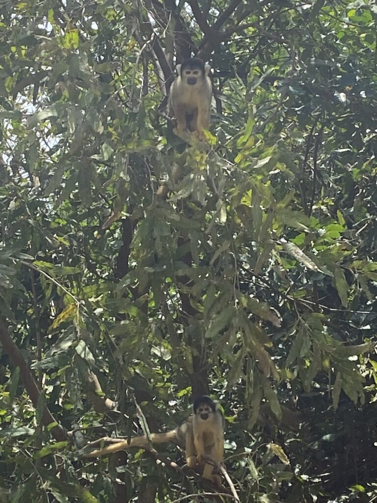
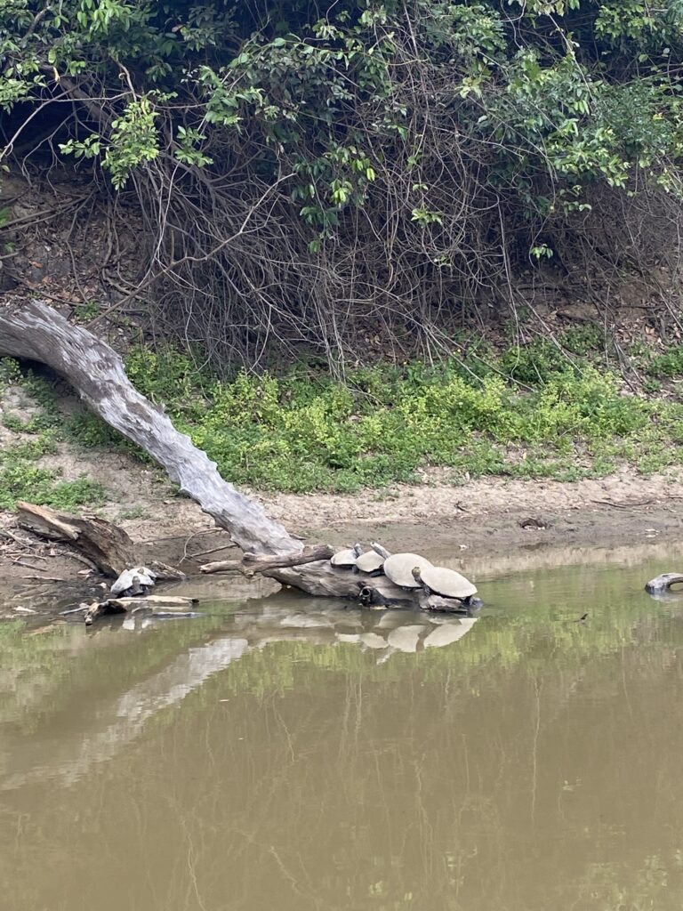
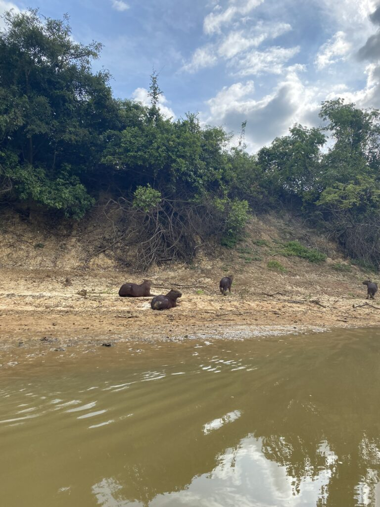
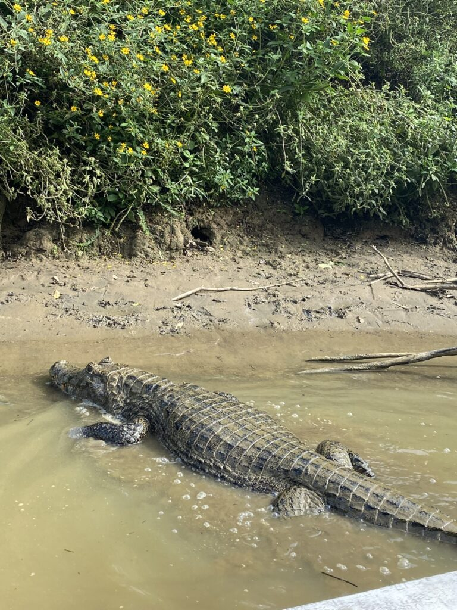
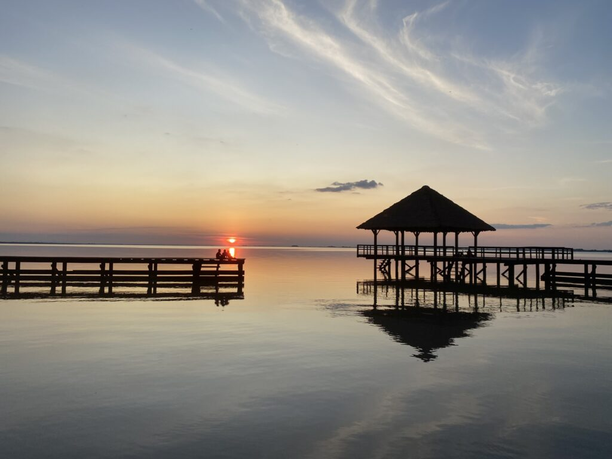

Wanneer de moerassige jungle verlossing brengt en wanneer de griezelbus ons hartverzakkingen bezorgt. Eindelijk is het tijd voor dieren spotten in een wonderschoon, ongerept stukje ecosysteem.
We trekken lokaal bekijks omdat we op straat voetballen met een plastic flesje. De reden dat we panna’s maken is om de tijd te doden voor de busrit naar de jungle, berucht als een van de verschrikkelijkste routes door Bolivia. Zodra de dubbeldekker slingerend de bergen intrekt, vallen de meeste Bolivianen als een blok in slaap, met uitzondering van een krijsende baby. Op het ritme van de onregelmatige, ongeasfalteerde weg bungelen alle hoofdjes gelijk op en neer, zo nu en dan wakker schrikkend en blikkend uit het raam. Letterlijk enkele decimeters naast de weg zonder vangrail staart de donkere afgrond ons diep in de ziel en wij kijken met grote ogen terug, in de hoop dat de bestuurder van het gammele voertuig 14 uur lang precies weet wat hij doet. Enkele dubieuze pauzes, waarin een vermoeden van regelmatige alcoholinname onstaat, breekt dat vertrouwen. Telkens de schimmige lichten van een tegenligger opdoemen, is de buschauffeur gedwongen achteruit de rijden over het steeds glibberiger wordende pad, tot de auto ternauwernood kan passeren.
Een slapeloze nacht en drie hartverzakkingen later belanden we 3500 lager in de tropische sferen, waarin ik me gelijk fantastisch voel. Zonder de absurde hoogtes en met een domimante, comfortabele hete lucht luiert iedereen in hangmatten aan het zwembad, wachtend op het begin van een tocht. Wij kiezen voor de Pampas-tour van drie dagen: op een bootje door de moerasachtige savanne, omdat daar ons de meeste dieren beloofd worden. Op dat vlak worden we niet de teleurgesteld. Tijdens een hobbelige autorit zien we gelijk een luiaard en twee prachtige toekans, die met hun kolossale snavels eitjes van andere vogels jatten. Eenmaal in het bootje op de rivier verschijnen onder anderen honderden kaaimannen, de gigantische knaagdieren cabibara’s, op elkaar gestapelde schildpadden, brutale apen en stinky birds. In de late middag laten ook de dolfijnen zich voor het eerst zien. Ze paraderen tijdens het vissen met hun roze bovenvin boven het water en komen nieuwsgierig dicht bij de boot.



We laten ons onderdompelen in de luxe van de lodge, waar we drie keer per dag overheerlijk eten en uit beleefdheid en genot twee tot drie keer opscheppen. Ik slaap als een baby in het beklamboede bed, de enige plek die veilig is van de frustrerende muggenplaag.
Een bijzondere ervaring is een boottocht door de nachtelijke pampas. De ogen van de alligators schitteren in het verlichting van onze zaklampen. Wanneer het licht uit is zie ik de voltalligste en helderste sterrenhemel die ik ooit heb aanschouwd.

Een wandeltocht in 40 graden door het moeras op zoek naar een anaconda levert niks op, maar de zwemsessie die volgt is er een om nooit te vergeten. In een meer waar vijf dolfijnen door een eerdere overstroming opgesloten zitten, storten we ons nerveus in het water. Terwijl een kaaiman ons dobberend op 20 meter afstand geheimzinnig begluurt, zien we de golfjes in het water steeds dichterbij komen. Compleet onverwachts beukt een glibberige corpus tegen onze heupen aan en neemt spelerige hapjes uit onze benen. De onrust verdwijnt niet, maar na enige gewenning pakken we de middel vast en strelen we de dolfijn over haar staart. Ze zwemt weer weg en komt meerdere malen terug, tot de zonsondergang dreigt. Een fraaie kleurencombinatie complementeert een buitengewone dag.
We vissen op piranha’s en eten ze voor lunch (smaakt naar witvis), alvorens we de griezelbus terug naar La Paz pakken. De hoogte slaat als een klap in mijn gezicht. Vanwege de koorts en geen eetlust laat ik me voor de zekerheid (negatief) testen op malaria. Wellicht dat de hoogteziekte overdonderend werkt. Hopelijk sterk ik genoeg aan om het hoogland van Peru te uit te kammen, alvorens de wegen scheiden van mijn geduldige reispartner en mij.
